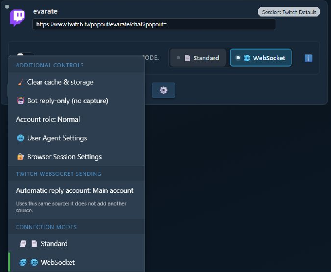
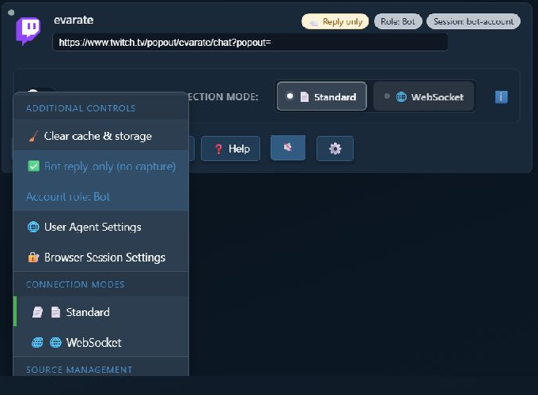
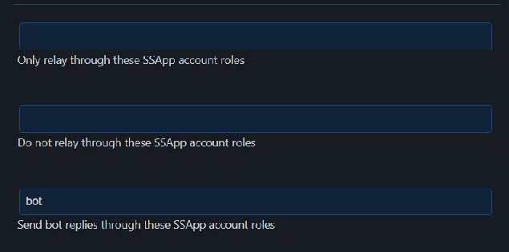

어떤 방식을 사용해야 하나요?
두 방식 모두 기본 계정 대신 봇 계정으로 자동 답변을 표시합니다. 구현 방식은 서로 다릅니다.
새로운 계정 연결 방식은 SSApp 데스크톱 앱의 Twitch WebSocket 소스에서만 사용할 수 있습니다. Twitch Standard 모드, 다른 플랫폼, 브라우저 확장 프로그램에서는 사용할 수 없습니다.
| 방식 | 적합한 대상 | 추가 소스 필요 여부 |
|---|---|---|
| Twitch WebSocket 봇 계정 | 가장 쉬운 Twitch 전용 설정 | 아니요 |
| 별도의 답변 전용 봇 소스 | Twitch Standard 모드 또는 답변 전송이 가능한 다른 플랫폼 | 예 |
방법 1: Twitch WebSocket 봇 계정
기존 WebSocket 소스에 두 번째 Twitch 로그인을 연결합니다. 다른 소스나 영구 브라우저 세션을 만들지는 않습니다.
팁: 스크린샷을 클릭하거나 탭하면 원래 크기로 열립니다.
- SSApp에서 Twitch 소스를 찾아 다음을 확인하세요: WebSocket 이 선택되어 있어야 합니다.
- 소스에서 클릭할 버튼: 톱니바퀴 버튼.
- 다음 항목 아래에서: Twitch WebSocket 전송 (Twitch WebSocket sending)에서 다음을 클릭하세요: 자동 답변 계정: 기본 계정 (Automatic reply account: Main account).

이 섹션은 해당 Twitch 소스가 WebSocket 모드를 사용할 때만 표시됩니다.
- 설명을 읽은 뒤 클릭하세요: 봇 계정 연결 (Connect bot account).
- SSApp이 별도의 Twitch 로그인 창을 엽니다. 봇 답변을 보낼 계정으로 로그인하세요.
- 로그인을 마치면 소스 메뉴가 다음으로 바뀝니다: 자동 답변 계정: @BotName.

별도 로그인 창을 사용하므로 일반 브라우저의 Twitch 로그인 상태 때문에 잘못된 계정이 자동 선택되는 것을 막을 수 있습니다.
장점
- 두 번째 소스를 만들거나 계속 실행할 필요가 없습니다.
- WebSocket 소스 연결 후 추가 설정이 거의 필요하지 않습니다.
- 챗봇 및 예약된 자동 답변은 봇 계정을 사용합니다.
- Twitch 공유 채팅에서 봇 답변은 이 소스의 채널에만 전송됩니다.
단점
- Twitch 전용.
- WebSocket 모드 전용.
- 수동 전송은 계속 기본 Twitch 계정을 사용합니다.
- 봇이 관리자여야 합니다. 또는 채널 소유자가 한 번 다시 연결하여 Twitch 봇 접근 권한을 승인해야 할 수 있습니다.
방법 2: 별도의 답변 전용 봇 소스
기존 SSApp 방식이며 계속 지원됩니다. 두 번째 소스를 만들고 자체 브라우저 세션을 부여한 뒤 자동 답변을 다음 역할의 소스로 보냅니다: bot .
아래 스크린샷은 Twitch를 사용하지만 이 방식은 Twitch 전용이 아닙니다. 로그인과 답변 전송을 지원하는 다른 SSApp 소스에도 사용할 수 있습니다.
- 채팅을 캡처하는 일반 소스를 추가하세요.
- 같은 채널이나 소스를 다시 추가하세요. SSApp에서 답변 전용 봇 소스로 만들지 물으면 다음을 선택하세요: 예.
- 두 번째 소스에서 다음을 여세요: 브라우저 세션 설정 (Browser Session Settings) 에서 별도 세션을 사용하세요. 예:
bot-account. - 클릭: 로그인 을 두 번째 소스에서 클릭하고 봇 계정으로 로그인하세요.
- 톱니바퀴 메뉴를 여세요. 활성화할 항목: 봇 답장 전용(캡처 없음) (Bot reply-only (no capture)) 을 켜고 다음 항목을 전환하세요: 계정 역할 (Account role) 의 표시가 다음이 될 때까지 전환하세요: 봇 (Bot).

설정이 끝난 두 번째 소스에는 답변 전용 (Reply only), 역할: 봇 (Role: Bot)와 별도 세션이 상단에 표시됩니다.
- 오른쪽 설정 패널에서 전체 모드로 전환한 뒤 검색하세요: bot replies.
- 설정: 다음 SSApp 계정 역할로 봇 답변 보내기 대상:
bot. - 봇 소스를 활성화하고 답변을 보내야 할 때는 계속 실행해 두세요.

입력할 값: bot 을 이 입력란에 넣으세요. 위의 릴레이 역할 입력란 두 개는 별도 설정이므로 비워 두어도 됩니다.
장점
- Twitch Standard 모드에서 작동합니다.
- 답변 전송을 지원하는 다른 플랫폼에서도 사용할 수 있습니다.
- 봇 소스에는 자체 브라우저 세션과 소스 컨트롤이 있습니다.
- 계정 역할을 사용하면 더 고급 라우팅 구성이 가능합니다.
단점
- 두 번째 소스와 별도 세션이 필요합니다.
- 전송하려면 봇 소스가 활성화되어 있어야 합니다.
- 더 많은 설정을 서로 맞춰 유지해야 합니다.
- 답변 전용을 끄면 두 번째 소스가 메시지를 중복 캡처할 수 있습니다.
두 방식을 모두 설정한 경우
하나의 답변 경로에는 한 가지 방식을 사용하세요. 설정 항목 다음 SSApp 계정 역할로 봇 답변 보내기 의 설정값: bot로 설정되어 있으면 별도의 봇 소스가 우선합니다. SSN은 연결된 Twitch WebSocket 봇 계정으로 같은 답변을 추가 전송하지 않습니다.
문제 해결
- 새 옵션이 보이지 않을 때: SSApp 데스크톱 앱을 사용 중이며 Twitch 소스가 WebSocket 모드인지 확인하세요.
- 연결된 Twitch 봇이 전송하지 못할 때: 봇을 관리자로 지정하세요. 관리자가 아니라면 채널 소유자로 기본 Twitch 계정을 한 번 다시 연결하고 요청된 권한을 승인하세요.
- 잘못된 Twitch 계정이 선택되었을 때: 계정을 다시 선택하고 SSApp의 별도 Twitch 창에서 봇 계정으로 로그인하세요.
- 별도 소스가 아무것도 보내지 않을 때: 소스를 활성화하고 봇으로 로그인했는지 확인한 뒤 라우팅 입력란에 정확히 다음 값이 있는지 확인하세요:
bot. - 별도 소스가 채팅을 중복 캡처할 때: 활성화: 봇 답장 전용(캡처 없음) (Bot reply-only (no capture)).
- 여전히 기본 계정으로 답변할 때: 연결된 계정이 사용자 이름으로 표시되는지 확인하거나 별도 소스의 표시를 확인하세요: 역할: 봇 (Role: Bot).